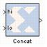

|
|
The Xilinx Concat block performs a concatenation of n bit vectors represented by unsigned integer numbers, i.e. n unsigned numbers with binary points at position zero.The Xilinx Reinterpret block provides capabilities that can extend the functionality of the Concat block.The block has n input ports, where n is some value between 2 and 1024, inclusively, and one output port. The first and last input ports are labeled hi and low, respectively. Input ports between these two ports are not labeled. The input to the hi port will occupy the most significant bits of the output and the input to the lo port will occupy the least significant bits of the output.